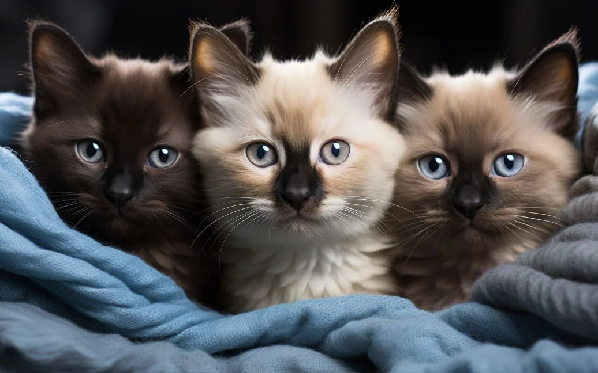

У Львові безкоштовно вакцинуватимуть собак та котів від сказу
З 11 до 13 листопада в парку імені Івана Франка, на вигульному майданчику, відбудеться безкоштовна вакцинація домашніх улюбленців від сказу. Мешканців запрошують приводити своїх котів та собак для щеплення щодня з 15:00 до 17:00 години.
Вчені дослідили, як коти впливають на своїх власників
Присутність котів у домі створює унікальну атмосферу, яка впливає на емоційний стан їхніх власників. Муркотіння, яке заповнює кімнату, додає затишку, а їхня компанія здатна підняти настрій у важкі моменти. Дослідження науковців показують, що любов до котів може бути значно глибшою. Доктор Аднан І. Куреші з Університету Міннесоти висловив припущення, що прив’язаність до котів може відображати загальні погляди людини. "Ці уподобання можуть не обмежуватися тим, що їхні витівки здаються "милими". Деякі люди, які тяжіють до котів, схоже, цінують незалежність, тихе товариство та атмосферу, вільну від хаосу. Вони спостерігають, як ці тварини впевненими кроками пересуваються домом, ніколи не перепрошуючи за свою природу. Ця спокійна присутність може надихнути людей, яким близька ідея прийняття унікальності, відкидання очікувань і цінування особистого часу", - йдеться у статті.